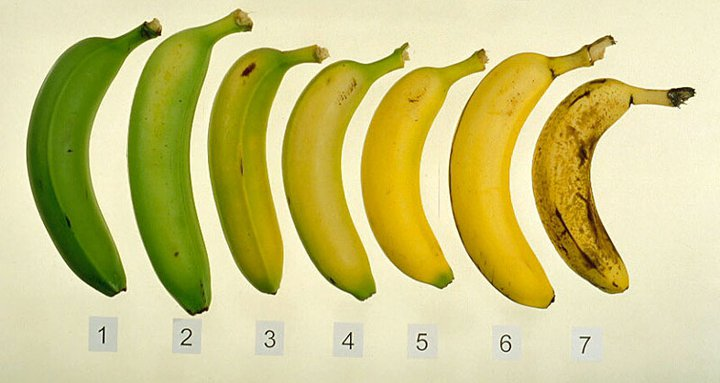

Introduction
Bananas. Yellow, ripe, and tasty.
Don't you love a good banana?
But don't you hate a green, unripe banana?
Or even a disgusting rotten banana?
The Grand Banana Company is a team of
skilled computer scientists who developed an
image-recognition program that will accurately
determine the age of your banana and the
stage it's in during its life cycle, as well
as predicting the best time to eat your banana.

Why Bananas?
In every home kitchen, restaurant, and
dining hall, we encounter bananas. The banana is one of
the most produced fruits every year. However,
thousands of pounds of bananas are gone to waste
every day. More specifically, bananas, along with other fruits,
account for 50% of wasted produce. Why?
First, you buy unripe bananas from the store.
Because they look unripe, you leave the bananas out.
A week or two later, you come back and your
bananas grow those nasty, black, blemishes.
You peel open one and it's all brown inside.
And so, you toss it in the trash.
As you can see, we waste so many bananas.
Sure, they can go in the compost, but
wouldn't it be better if you actually ate it?
After all, you paid for the bananas so you'd
eat them, not use them in your yard.
And thus, we, The Grand Banana Company,
created the NanaScanner to resolve this issue.
The app will effectively determine the age of a banana
and determine the amount of time until a banana is ripe.
After identifying the age of your batch of bananas,
the app will send reminders and notifications.